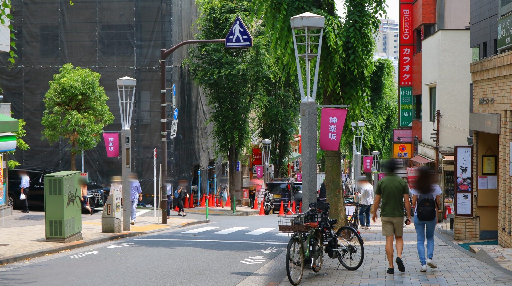

LOCATION
周辺環境
飯田橋駅（徒歩12分）
神楽坂・江戸川橋・飯田橋、3つの街が彩る上質な暮らし。
神楽坂には、古き良き風情を残しながらも、豊富な飲食店が立ち並び、街を歩くだけで味わい深い時間が流れます。さらに、生活利便施設や趣のある商店街が立ち並ぶ江戸川橋、そしてさまざまな商業施設が集まる飯田橋がすべて徒歩圏内にあるため、日々の暮らしがより一層快適になります。
現地周辺には、スーパーマーケットや医療施設など生活に必要な施設が整っており、充実した利便性を享受できます。
また、神田川のせせらぎや小石川後楽園の緑豊かな自然が広がり、都会にいながらも四季折々の移ろいを感じることができます。春には桜、夏には新緑、秋には紅葉、冬には雪景色と、季節の美しさが日常に溶け込み、自然の癒しを享受できる贅沢な環境です。
都市生活の快適さと自然の安らぎを兼ね備えた特別な場所で、豊かな暮らしをお楽しみください。
-
江戸川橋地蔵通り商店街（徒歩11分）
※写真はイメージです。 -

神楽坂通り（徒歩13分）
-
AKOMEYA TOKYO in la kagū（徒歩16分）
※写真はイメージです -
飯田橋ラムラ（徒歩14分）
-
東京ドームシティ（徒歩18分）
-

まいばすけっと 東五軒町店（徒歩1分）
※写真はイメージです -
赤城神社（徒歩11分）
-
神田川（徒歩1分）
-

小石川後楽園（徒歩12分）
-
文京区立江戸川公園（徒歩14分）
※写真はイメージです
LIFE INFORMATION
-
-
ショッピング施設
- まいばすけっと 東五軒町店
- 1分
- マルエツ 江戸川橋店
- 4分
- まいばすけっと 西五軒町店
- 5分
- いなげや飯田橋店
- 7分
- コモディイイダ江戸川橋店
- 12分
- 神楽坂 KIMURAYA
- 12分
- よしや SainE 神楽坂店
- 12分
- 業務スーパー 新宿榎店
- 19分
- ファミリーマート 新宿新小川町店
- 2分
- セブン-イレブン 新宿水道町店
- 4分
- どらっぐぱぱす 新江戸川橋店
- 9分
- 飯田橋ラムラ
- 14分
- AKOMEYA TOKYO in la kagū
- 16分
- 東京ドームシティ
- 18分
-
教育施設
- 東五軒町保育園
- 3分
- 小学館アカデミー飯田橋ガーデン保育園
- 7分
- 新宿区保育ルームえどがわ園
- 8分
- アスク神楽坂保育園
- 15分
- 繭の糸神楽坂保育園
- 17分
- メリー★ポピンズ 神楽坂ルーム
- 20分
- 新宿区立津久戸幼稚園
- 10分
- 新宿区立江戸川小学校
- 6分
- 新宿区立牛込第三中学校
- 24分
-
-
-
医療機関
- あべメディカルクリニック
- 5分
- 新小川町クリニック
- 5分
- まさぼ内科・糖尿病クリニック 飯田橋院
- 6分
- 江戸川橋胃腸肛門クリニック
- 7分
- 江戸川橋クリニック耳鼻咽喉科
- 8分
- 江戸川橋さくらクリニック
- 9分
- 神楽坂ホームケアクリニック
- 9分
- 岡崎ハートクリニック
- 10分
- 内科すずきクリニック
- 12分
- 花クリニック
- 12分
- とびた整形外科・内科クリニック
- 13分
-
その他
- 新宿区役所 箪笥町特別出張所
- 19分
- 新宿区立鶴巻図書館
- 22分
- 牛込警察署 大曲交番
- 4分
- 小石川後楽園
- 12分
- 文京区立江戸川公園
- 14分
- 東京ドーム
- 22分
-